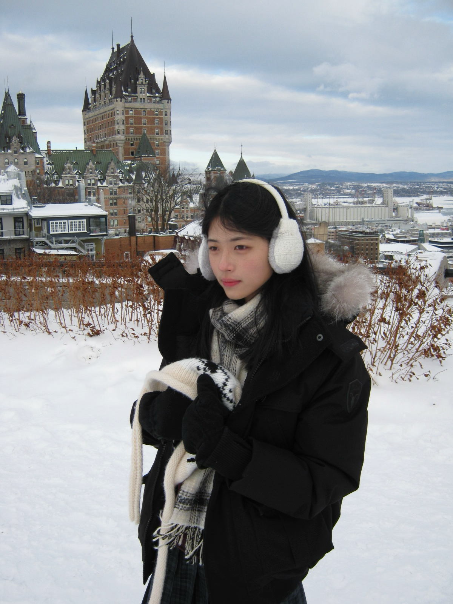
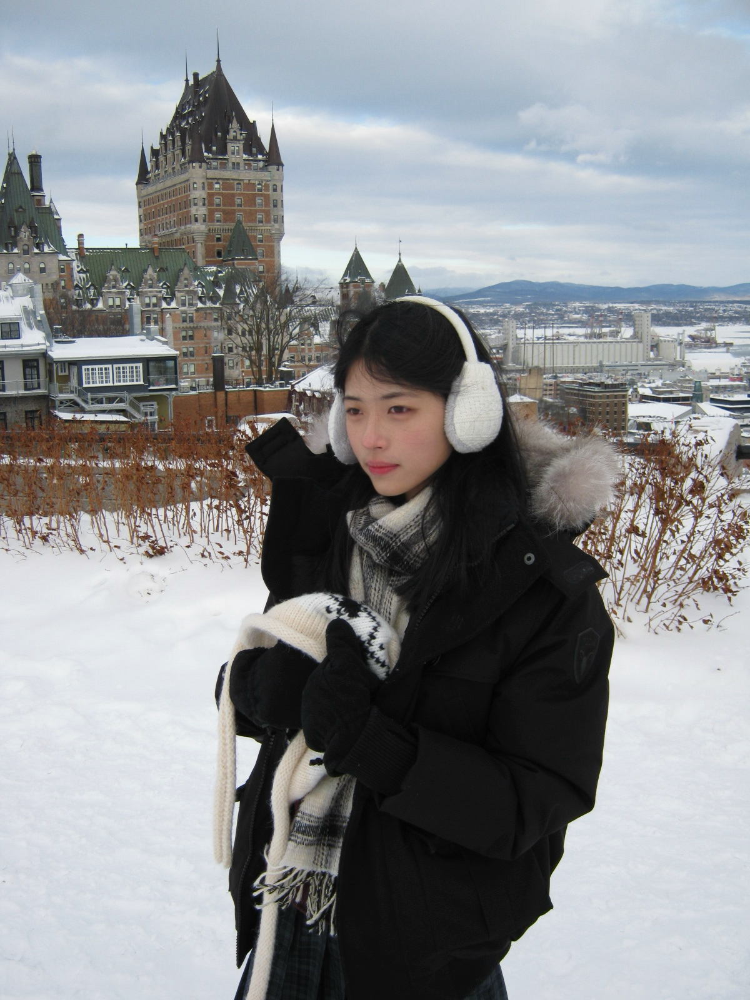

About
Me
I am a student at the University of Waterloo, currently pursuing a
degree in Global Business and Digital Arts.
Passionate about the intersection of design and technology, I am
constantly seeking opportunities to learn, grow, and translate
complex ideas into intuitive visual narratives.